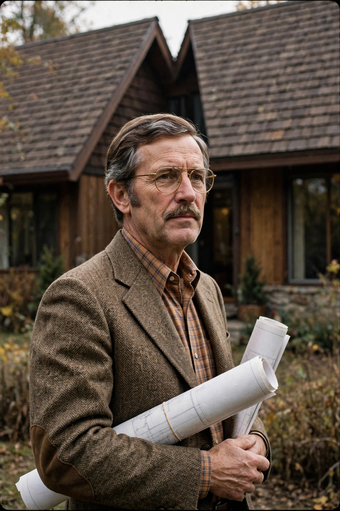

| Robert Venturi | |
|---|---|
 | |
| Born | 25 June 1925, Philadelphia, Pennsylvania, US |
| Died | 18 September 2018 (aged 93), Philadelphia |
| Nationality | American |
| Spouse | Denise Scott Brown (m. 1967) |
| Awards | Pritzker Architecture Prize (1991); AIA Gold Medal (2016) |
Robert Charles Venturi Jr. (25 June 1925 – 18 September 2018) was an American architect, founding principal of the firm Venturi, Scott Brown and Associates, and a major figure in postmodern architecture. His book Complexity and Contradiction in Architecture (1966) challenged modernist orthodoxy with the retort "Less is a bore" to Mies van der Rohe's "Less is more". He won the Pritzker Architecture Prize in 1991.
Venturi studied at Princeton University and spent three years as a fellow at the American Academy in Rome. He worked for Eero Saarinen and Louis Kahn before founding his own practice in 1964. The house he designed for his mother, the Vanna Venturi House in Chestnut Hill, Philadelphia (1964), with its split gable and playful contradictions, became an icon of postmodernism.
With Denise Scott Brown and Steven Izenour he wrote Learning from Las Vegas (1972), which drew lessons from the commercial strip and introduced the contrast between the "duck" (a building that is itself a sign) and the "decorated shed". Their built work includes the Sainsbury Wing of the National Gallery, London (1991), the Seattle Art Museum, and many university buildings.